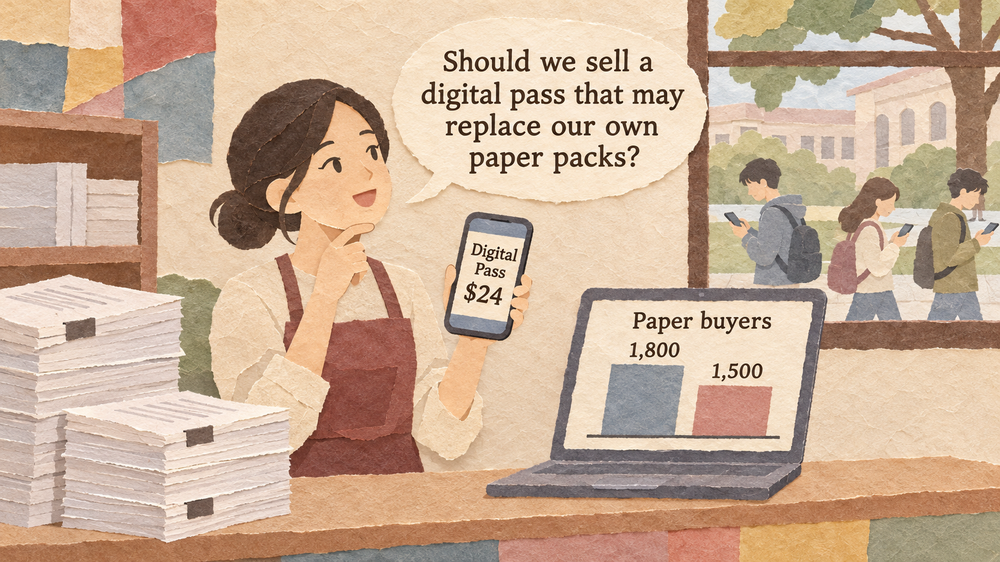
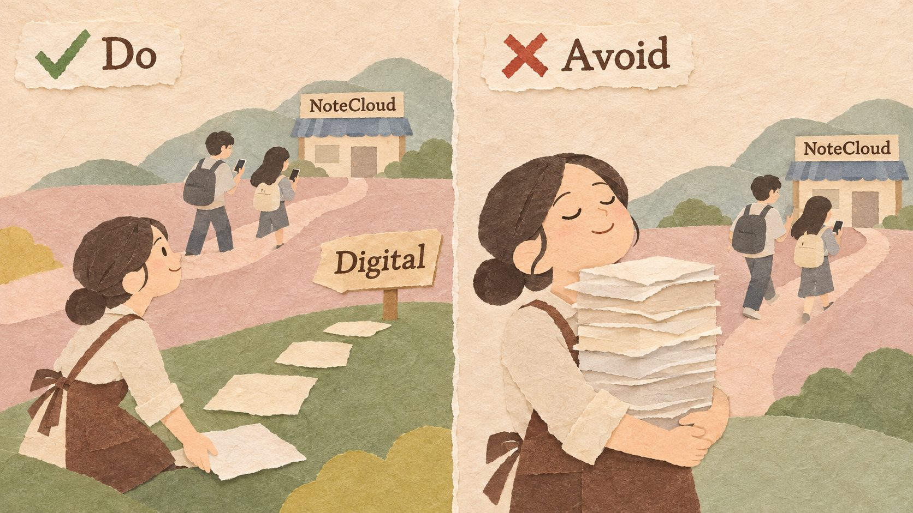
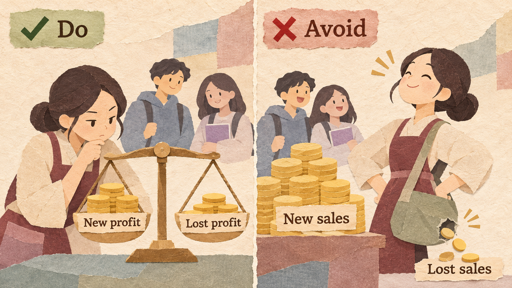
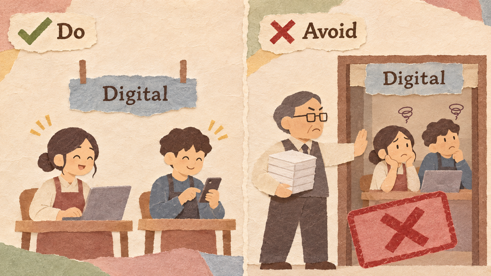
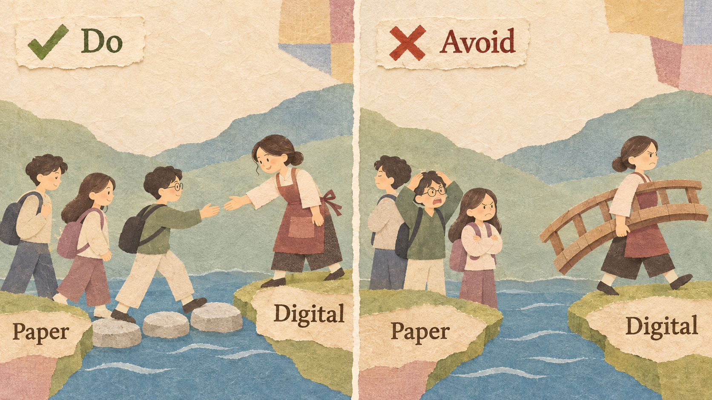

StudyPrint is a campus print shop that sells printed course packs to students. Mei is its owner. NoteCloud, a $6-a-month digital notes app, takes about 300 of her buyers every semester.
| LAST SEMESTER | THIS SEMESTER | |
|---|---|---|
| Students who buy paper course packs | 1,800 | 1,500 |
| Money each buyer spends (2 packs x $20) | $40 | $40 |
| Cost to print 2 packs | $16 | $16 |
| Profit per buyer | $24 | $24 |
| Total profit | $43,200 | $36,000 |
A company launches a new product even though it will take sales from its own old product. Some of its own customers move from the old product to the new one. Companies do this on purpose when a new technology or a rival is already taking their customers. The choice is not "old sales or new sales"; it is "lose customers to yourself or lose them to a rival."
Ask what will happen if you do nothing. If a rival is already taking your customers, today's profit will not stay.

StudyPrint earns $36,000 this semester. If Mei does nothing, NoteCloud keeps taking 300 buyers each semester. The real choice is between the Digital Pass and a smaller business, not between the pass and $36,000.
Saying "the new product will hurt our sales" and stopping there. The old sales are already disappearing; the only question is who gets the customers.
New sales look good on their own. Always subtract the profit you lose on the old product.

The Digital Pass earns $20 from each student, but a paper buyer who switches earned $24, so each switcher costs $4. The pass helps mainly because of the new students and the buyers it keeps from NoteCloud.
Reporting "900 Digital Pass users, $18,000 of new profit!" without saying that 600 of them were paper buyers who used to bring $14,400.
Managers of the old product often slow the new one down, because it takes their sales. A separate team with its own targets moves faster.

Mei asks two staff members to run the Digital Pass. They are measured by digital users, not by paper sales.
Letting the paper team decide the price and features of the Digital Pass. They may make it weak so that paper sales stay high.
Give customers time, help, and a good reason to switch. Do not force everyone overnight.

For one year, StudyPrint keeps selling paper packs, offers the Digital Pass at a discount to paper buyers, and shows them how to use it in class.
Stopping paper sales overnight and telling students to "go digital." Students who are not ready leave for a rival.
In 2007, Apple launched the iPhone, which could also play music, so people would stop buying a separate music player. iPod sales peaked at about 54.8 million units in 2008 and fell to about 14.4 million in 2014. By 2012, the iPhone brought in about half of Apple's revenue ($80.5 billion of $156.5 billion).
In 2013, Adobe stopped making new versions of Creative Suite (bought once for about $1,300 to $2,600) and moved to a monthly subscription, about $50 a month for all apps. Revenue fell from $4.40 billion (2012) to $4.06 billion (2013), then grew to $4.80 billion (2015) and $7.30 billion (2017).
In 1975, Kodak engineer Steve Sasson built one of the first digital cameras. But Kodak earned most of its profit from film, and its leaders were slow to move into digital photos because digital would replace film. Digital cameras and then phones replaced film anyway. Kodak filed for bankruptcy protection in January 2012.
Netflix wanted customers to move from DVDs by mail to streaming. In September 2011, it announced that the DVD service would become a separate company, Qwikster, with its own website and account. Customers were angry. In October 2011, only three weeks later, Netflix cancelled the plan.
| EXAMPLE | RESULT | THE RULE THAT DECIDED IT |
|---|---|---|
| Apple iPhone | Good | Replaced its own iPod before rivals did (Rule 1) |
| Adobe Creative Cloud | Good | Accepted a short fall for a bigger future (Rules 1 and 2) |
| Kodak | Bad | Protected film instead of facing the future (Rules 1 and 3) |
| Netflix Qwikster | Bad | Pushed customers overnight (Rule 4) |
Cannibalization rate = old customers who switched / customers of the new product x 100
Net gain = profit from the new product - profit lost on the old product
Gain of the plan = result with the plan - result if we do nothing
What you give up to get something you value more.
A promise, written before you start, about which result would make you change your decision.
Example: "If fewer than 300 students use the Digital Pass in the first semester, we will stop it."
Six companies plan a new product:
| PRODUCT | ANSWER | WHY |
|---|---|---|
| (a) $3 basic loaf | Cannibalization | Some premium buyers pay $3 instead of $6 |
| (b) Free website | Cannibalization | Some readers stop buying the paper |
| (c) Gym in a new city | Not | No current members there |
| (d) Cheaper plan with ads | Cannibalization | Some full-price customers move down |
| (e) Electric version | Cannibalization | Some petrol-car buyers choose electric |
| (f) Umbrellas | Not | Umbrellas do not replace coffee |
Today: 1,500 paper buyers / $24 profit each / $36,000 profit per semester. Next four semesters:
NoteCloud keeps taking 300 buyers each semester.
Paper buyers: 1,200, then 900, 600, 300.
Build cost $10,000 once. Each semester 600 paper buyers switch (900 still buy paper) and 300 new students join: 900 pass users at $20 profit each.
The team believes the pass stops students leaving for NoteCloud.
Explain cannibalization and why a company would cannibalize its own product on purpose.
Calculate the cannibalization rate and the net gain.
Compare a plan with the "do nothing" baseline and write a decision rule.
Christensen, C. M. (1997). The Innovator's Dilemma. Harvard Business School Press.
Apple Inc. (2008, 2012, 2014). Form 10-K annual reports.
Adobe Inc. (2013-2017). Form 10-K annual reports.
Eastman Kodak Company (2012). Voluntary Chapter 11 business reorganization announcement.
Hastings, R. (2011, October 10). DVDs will be staying at Netflix.com. Netflix.